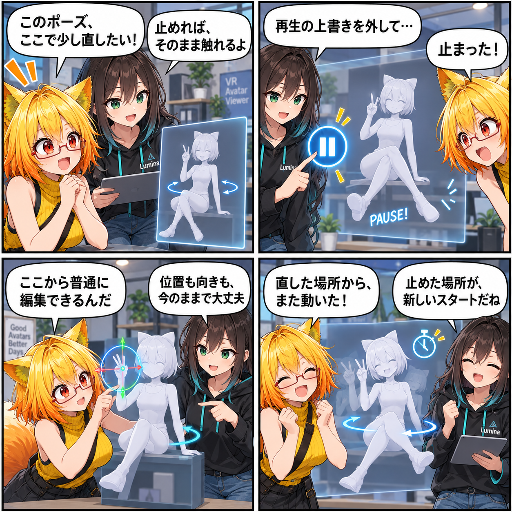

動くポーズを、止めた場所から触れる日
内蔵ポーズモーションを再生したまま、好きなフレームで止めて通常のポーズ編集へ移れるようにしました。再開するときも、止めている間に動かしたアバターの位置と向きを新しい基準として引き継ぎます。

ポーズを「見る」だけで終わらせない
これまで内蔵のHumanoid AnimationClipは、指定フレームで静止ポーズとして使えました。今回は通常再生にも対応し、座り・寝姿勢・脚上げなどの作者ポーズをループで確認できるようにしました。再生開始時のアバター位置・向きを基準にするため、クリップの原点へ引っ張られません。歩行向けのFinal IK GrounderとRoot Motionはポーズモーション中に使わず、作者が意図した姿勢を優先します。
止めた瞬間から、いつもの編集へ
ポーズメニューと撮影ポーズの両方に「一時停止 / 再開」を用意しました。一時停止時はPlayableGraphによるボーンの上書きを外すため、そのフレームの姿勢を起点にIKや関節回転など、普段のポーズ編集を続けられます。再生を止めたままアバターを移動・回転しても、操作が再生側から巻き戻されないようにしています。
再開後も、いま置いた場所から
再開時には、一時停止中に変更したアバター本体の位置・向きを新しい再生基準として採用します。右クリック相当の回転やRootドラッグで構図を整えてから再生に戻っても、元の開始角へ戻りません。ランダム連続中に一時停止した場合は、次の候補へ切り替えるタイマーも止まり、再開時から保持時間を数え直します。
候補は一つのカタログから
撮影ポーズの候補とカテゴリは通常のポーズメニューと同じ共通カタログへ統合しました。個別ポーズを増減したとき、撮影側と通常メニュー側で候補が食い違わない構成です。今回のテストでは、停止後のTransform編集、再開時の新しいアンカー、再生中と停止時にユーザー回転を保持することを確認しています。
4コマの裏話
動いているポーズを「眺めるだけ」と思ったろひが、止めた瞬間から手を加えられると気づく小さな発見の寸劇です。最後の一言は、停止中に整えた構図をそのまま再生の基準にできる今回の改善を表しています。
まとめ
内蔵ポーズモーションを通常再生し、任意のフレームで止めて通常編集へ引き継げるようにしました。Root Motionや歩行向け補正で作者ポーズを崩さず、停止中のアバター配置は再開時の新しい基準として扱います。撮影ポーズと通常ポーズの候補も共通カタログにまとめました。
本日のひとこと
止められるから、ポーズは自分のものになる。